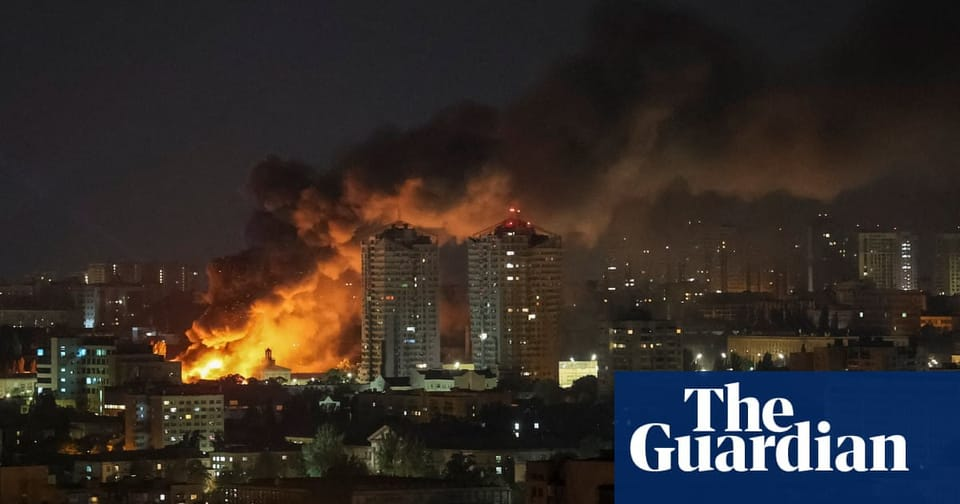

世界苦茶06月07日新闻 | 36条 | 黄之锋狱中再被控国安重罪

黄之锋狱中再被控国安重罪 | 中美稀土达成协议 | 俄乌互相打规模攻击 | 特朗普获得美国司法体系支持
每天三件事：
苦茶数据
美元兑人民币：7.18（昨日7.17，前日7.18）
美元兑日元：144.93（昨日143.84，前日143.06）
上证指数：休市（昨日3385，前日3382）
标普500指数：休市（昨日6000，前日5930）
比特币：105519（昨日102898，前日104821）
布伦特原油：66.47（昨日65.14，前日64.83）
中国新闻
• 伊朗从中国订购足以制造约800枚弹道导弹的材料： 《华尔街日报》周四报道，伊朗已从中国订购了大量用于制造弹道导弹的材料，该报道指出伊朗正寻求在军事上重新确立自己及其代理人网络的力量。此消息发布之际，伊朗与美国的核谈判正在进行中，该谈判自4月启动。根据Axios的另一篇报道，以色列已告知白宫，除非谈判失败，否则不会攻击伊朗核设施。《华尔街日报》援引知情人士消息称，德黑兰订购了足够制造约800枚导弹的过氯酸铵，这种材料是固体燃料导弹的关键成分。
• 解放军21机扰台空域 ：台湾军方星期五下午三小时内侦获21架次中国大陆军机活动，台湾国防部指责大陆相关行为有高度挑衅意味，给区域带来不安与威胁。台湾国防部星期五晚间在官网发布新闻稿称，当天下午3时45分起，陆续侦获大陆歼-16、空警-500等各型主、辅战机及无人机计21架次出海活动，其中15架次逾越台海中线及其延伸线，进入台湾北、中及西南空域，配合大陆舰艇假“联合战备警巡”为名，对台湾周边空、海域进行骚扰。台湾国防部指，相关行为具有高度的挑衅意味，“未适当顾及其他国家的海洋权利，为区域带来不安与威胁”，更是对区域现状的公然破坏。
• 武大生因学业行凶伤人 ：中国知名学府武汉大学在6月4日发生一起故意伤害案件，造成三人受伤。当地警方在事发两日后发布通报称，武大一名在校学生因学业不顺行凶。武汉市公安局洪山区分局星期五晚通报，武汉大学一处食堂在星期三下午5时许发生故意伤害案件。警方随后赶赴现场处置，会同学校、急救等部门将三名伤者及时送医治疗。通报称伤者目前均无生命危险。根据通报，朱姓犯罪嫌疑人是武汉大学一名23岁的在校男学生，被警方当场控制。经审查，朱姓男子因学业不顺问题行凶，对犯罪事实供认不讳，已被采取刑事强制措施。案件正在进一步侦办中。
• 黄之锋狱中被控勾结外国 ：香港警方据报拘控仍在狱中服刑的前香港众志秘书长黄之锋，指他涉嫌串谋勾结境外势力危害国家安全等罪行。综合香港《明报》《星岛日报》报道，香港警方国家安全处发布新闻稿称，星期五在赤柱监狱拘捕一名28岁男子，涉嫌违反《香港国安法》中“串谋勾结外国或者境外势力危害国家安全”罪，以及《有组织及严重罪行条例》第25条“处理已知道或相信为代表从可公诉罪行的得益的财产”罪。消息人士证实，被捕者为前香港众志秘书长黄之锋。 （翻評：這次可能呢個要判無期。）
• 马英九拟出席海峡论坛 ：台湾前总统马英九规划出席6月在中国大陆举行的海峡论坛。据台湾联合新闻网星期五报道，第17届海峡论坛将于6月15日在中国大陆举行，马英九基金会执行长萧旭岑受访时说，马英九认为在两岸兵凶战危之际，唯有深化两岸交流，才能降低紧张、增进了解，因此过去两年亲自带马英九基金会“大九学堂”学生赴大陆访问三次，事实证明对两岸关系有极其正面的影响。对于马英九是否出席本届海峡论坛，萧旭岑说，基金会持续规划相关出访行程，确定后将主动对外公布，也欢迎台湾各界一起促进两岸民间交流。
• 加拿大中方通话缓和紧张 ：加拿大政府表示，加国总理卡尼星期四与中国国务院总理李强通话，并就贸易、芬太尼危机进行沟通，显示两国紧张关系或有缓和迹象。加拿大总理办公室星期四发表声明称，卡尼与李强就双边关系交换了意见，包括加强接触的重要性，并同意建立常态化沟通渠道。中国政府尚未发布李强和卡尼通话的相关消息。
亚太印太新闻
• 安华促泰柬边境缓和紧张 ：马来西亚首相安华星期五敦促泰国和柬埔寨采取措施，缓解两国边界争端的紧张局势。路透社报道，安华在社媒X上说：“我敦促泰国和柬埔寨继续保持克制，采取措施缓和紧张局势，并努力达成和平、全面的解决方案。”安华说，他已与两国首相进行接触，并赞赏他们致力于和平解决问题的承诺。
• 东北大学将聘500名顶尖研究者 ：日本东北大学校长富永悌二6月6日在东京举行记者会，宣布计划在到2029年度为止的五年内斥资约300亿日元，招聘约500名世界顶尖水平的研究人员。考虑到美国特朗普政府推进的削减科学预算等动向，东北大学还将加强与美国知名大学的合作，完善研究据点等争取获得优秀人才。富永强调：“美国的研究人员正面临困境。希望加快获得优秀的研究人员，并从日本派遣年轻人赴海外，实现头脑的良性循环。”海外研究人员的报酬普遍高于日本，但富永称“我们将采取不设年薪上限等的应对方式”。2025年度的计划中，包括16名美国研究人员在内共61人已内定聘用。
科技新闻
• OpenAI称中国团体滥用AI ：美国人工智能公司OpenAI星期四表示，越来越多中国团体正在利用该公司的人工智能技术开展隐蔽行动。OpenAI定期发布平台上发现的恶意行为报告，例如用于开发和调试恶意软件，或为网站和社交媒体平台生成虚假内容。综合路透社和《华尔街日报》报道，该公司星期四表示，“相当数量”的违规行为据信来自中国，最新报告中包含的10个样本案例中有四个可能源自中国。
• 特马冲突恐影响美太空计划 ：美国总统特朗普与亿万富豪马斯克公开决裂，不仅在网上争锋相对，还将带来现实后果，特朗普威胁终止与马斯克的政府合同，马斯克宣布让太空探索技术公司的“龙”飞船退役，恐将直接冲击美国太空计划的核心部分。彭博社报道，马斯克于星期四下午宣布，SpaceX将立即启动龙飞船退役。作为全球运载能力最强的火箭发射公司，SpaceX还持有数十亿美元的联邦合同，包括为五角大楼发射关键的国家安全卫星，以及研发能够在短至两年内将美国宇航员送上月球的航天器。马斯克决定让龙飞船退役，是特朗普威胁撕毁与马斯克的所有联邦合同所引起的，这些合同是SpaceX的关键收入来源。
• 星链获准进军印度市场 ：埃隆·马斯克的星链公司已获得印度监管部门批准，为在这个全球人口最多的国家推出其卫星互联网服务铺平了道路。据一位不愿透露姓名的官员在新德里对记者表示，星链已经获得了印度电信部的许可。该批准标志着这家美国公司多年来的等待画上了句号。该公司一直寻求在这个拥有超过 9 亿互联网用户的国家站稳脚跟 —— 这是一个至关重要的机会，尤其是在其仍被排除在中国市场之外的情况下。
• 美团在迪拜扩展无人配送 ：中国外卖平台巨擘美团正扩大在迪拜的无人机配送服务，推动海外业务扩张。美团副总裁毛一年星期四接受彭博社访问时说，美团将在今年下半年于迪拜新增两至三条无人机送货航线，并有可能进一步扩展。毛一年表示，航线会设在迪拜码头的海滨区域。
• 特斯拉 Optimus 机器人项目负责人离职： 特斯拉公司的一位人工智能高级主管于周五离职，这对 Optimus 机器人项目而言是一个挫折，首席执行官马斯克称该项目对特斯拉的未来至关重要。工程副总裁Milan Kovac负责特斯拉的Optimus研发工作，Optimus是一款人形机器人，在马斯克将这家电动汽车制造商转型为机器人和AI公司的愿景中处于核心地位。
财经新闻
• 中美同意重启稀土供应 ：美国总统特朗普说，中国国家主席习近平同意重启稀土供应。稀土对美国许多高端产业链至关重要。彭博社报道，特朗普星期五在空军一号上被记者问及习近平是否同意重启稀土和磁铁供应，他说：“是，他同意了。”根据路透社早前报道，中国向关键矿产供应商发出临时出口许可证。特朗普当天还在社媒平台Truth Social宣布，财政部长贝森特、商务部长卢特尼克和贸易代表格里尔下星期一将在伦敦与中国同行举行会谈。
• 中方向美车企发稀土许可 ：消息人士称，中国已向美国三大汽车制造商的稀土供应商发放临时出口许可证。部分许可证的有效期为6个月。目前尚不清楚这些许可证涵盖的数量和种类。消息人士称，美国商务部近日已暂停核设备供应商向中国发电厂销售的许可证，这可能会影响核电站所用零件和设备的供应。目前尚不清楚特朗普和习近平5日的通话是否会影响此事。
• 中美高官伦敦将会谈 ：美国总统特朗普的三名经贸高官将于下星期一在伦敦与中国同行举行会谈，设法化解双方的贸易争端。这两个全球最大经济体之间的贸易争端一直牵动全球市场神经。路透社报道，特朗普星期五在社媒平台Truth Social宣布此事，并表示财政部长贝森特、商务部长卢特尼克和贸易代表格里尔将代表华盛顿参加会谈，但未提供更多细节。特朗普在贴文中写道：“会谈应该会非常顺利。”
• 特朗普李在明通话磋商关税 ：韩国新总统李在明的办公室星期五说，他已与美国总统特朗普通了电话。路透社报道，李在明办公室在一份声明中说，在通话中，特朗普和李在明决心尽快就关税问题达成令人满意的协议，并期待谈判取得切实成果。李在明办公室说，特朗普还邀请李在明访美，并同意尽早以多边形式或双边访问的形式进行会晤，就两国同盟发展进行更深入的磋商。
• 欧元区经济增长超预期 ：欧元区经济在2025年初的增长速度达到先前估算的两倍，包括爱尔兰和德国在内的国家出口激增，以应对预期中的美国關稅措施。彭博社引述欧洲统计局星期五的数据说，第一季度经济产出较前三个月增长0.6%，高于5月中旬公布的第二次估算值0.3%。尽管彭博社调查的大多数经济师预计数据会向上修正，但仅有两人预料到修正幅度会如此之大。爱尔兰的季度经济增长率出人意料地接近10%，德国经济扩张速度也快于预期，这两大因素是欧元区今年开局良好的主要原因；仅出口就贡献0.9个百分点，投资也提供强劲支撑。
• 台将反制比亚迪绕道入台 ：针对中国大陆电动汽车巨头比亚迪拟绕道泰国将整车输出台湾的传闻，台湾经济部回应称，若查证属实，将采取四大反制措施。综合《镜周刊》和东森新闻报道，比亚迪已在泰国设立电动车组装厂与经销体系，近期传出有意以此为跳板，输出台湾市场，避开台湾目前禁止中国大陆整车进口的政策。报道引述业界传闻称，首波导入车型可能为豪华多功能休旅车“N9”，售价约落在新台币百万元出头，试图以价格优势抢占市场。
• 泰国旅游复苏仍需时日 ：泰国旅游业前景黯淡，即使有热门剧集《白莲花大饭店》的效应加成，也未能逆转亚洲地区游客数量下滑的负面效应，实现旅游复苏可能还需数月。《白莲花大饭店》是串流平台HBO大热连续剧，最新一季在泰国著名旅游地区苏梅岛的四季酒店和安纳塔拉度假村取景，讲述一家超豪华度假村里客人与员工生活的故事。这部剧吸引许多美国和欧洲游客到泰国度假。泰国政府数据显示，今年前五个月，赴泰美国游客数量超过62万5000人次，增长12%，欧洲游客更是激增超过300万人次，涨幅将近20%。
• 韩国再列入汇率操纵观察名单 ：美国财政部星期四向国会提交“主要贸易伙伴的宏观经济及外汇政策”半年度报告，将韩国列入汇率操纵观察名单。韩联社报道，韩国自2016年4月以来已连续14次被美国列入观察名单，2023年11月时隔七年多被移出名单，2024年11月又被列入名单。美国指定汇率操纵观察对象的标准有三项，即对美贸易顺差达150亿美元以上；经常项目顺差额占国内生产总值3%以上；最近12个月至少有八个月净买入美元，且其规模占GDP的2%以上。只要符合其中的两项条件，就会被列为观察对象。
• 越南对美顺差创纪录 ：由于出口激增，且从中国的进口也大幅增加，越南5月份对美贸易顺差大幅扩大，加剧了该国与美国之间的紧张关系。路透社报道，越南政府星期五公布的数据显示，5月份越南对美贸易顺差飙升至122亿美元，同比增长近42%，环比增长17%。越南对美出口也同比增长约42%，达到冠病疫情后的最高水平138亿美元。这与正在控制对美出口的其他国家形成鲜明对比。美国公布的贸易数据也显示，4月份越南对美贸易顺差超过墨西哥，仅次于中国和欧盟。
• 德国欲主导欧盟贸易谈判 ：在美国和欧盟争取在7月9日对等关税暂缓期结束前达成贸易协议之际，德国总理默茨说，德国已做好准备在欧盟未来的贸易谈判中发挥更大的领导作用。德国为欧洲最大的经济体。路透社报道，默茨星期四到白宫会见美国总统特朗普后向记者说，当天会晤富有成效，两人同意在贸易与其他问题上加强合作。
• 印尼推15亿美元刺激经济 ：印度尼西亚推出15亿美元的经济刺激配套，以提振消费，希望第二季度的增长能保住在接近5%的水平。刺激经济的新配套包括民众购买火车票、飞机票和渡轮票时可获得折扣，公路通行费也有补贴，以促进旅游业发展。印尼政府还将发放额外的社会援助，同时向低收入工人提供现金补贴，并提供失业保险折扣。这个涵盖五大方面的经济刺激配套星期四生效，以在6月底至7月的学校假期期间，提高民众的消费能力，进而刺激经济活动和促进经济增长。
• 特朗普马斯克冲突拖累股市 ：美国总统特朗普与特斯拉首席执行官马斯克近日因电动车政策公开交锋，引发市场担忧情绪升温，特斯拉股价在美国时间星期四大跌14.26%至284.7美元，市值一日蒸发1530亿美元，创下自去年“特斯拉抗议潮”以来最大单日跌幅。马斯克日前曾批评特朗普近期提出的预算法案，称法案“终结了对电动车的补贴”，特朗普随即反击，指马斯克是因“失去政府好处”而不满。根据财经杂志《福布斯》估算，这场风波也使马斯克的个人财富缩水270亿美元至3880亿美元。
• 李书福稱吉利决定不再建设新的汽车生产工厂： 在重庆举行的“中国汽车重庆论坛”上，吉利控股集团董事长李书福以视频方式参会，其表示，当今世界的汽车工业存在严重的产能过剩，吉利决定不再建设新的汽车生产工厂，不搞重复建设，吉利要充分利用全球过剩的产能，尽最大可能地展开务实合作、资源重组。这样做，既能利用成熟的质量保证体系，又能利用熟练的技术工人，同时能够提高同行的过剩产能的利用率，以友善的姿态参与全球市场竞争。李
• 中国电视市场品牌5月出货量为283.0万台： 洛图科技数据显示，今年五月，中国电视市场品牌整机出货量为 283.0 万台，同比下降2.1%。截至五月底，电视市场的累计出货量为1403.5万台，受益于第一季度的表现，整体较去年同期小幅增长1.7%。TCL、海信和创维三大传统主力品牌(含子品牌)在5月的合并出货量约为166万台，同比下降2.4%，合并市占率为58.7%。小米(含红米)5月的出货量约为60万台，同比增长9.1%，市场占有率为21.2%。
俄乌战争
• 默茨批美议员轻视俄军备 ：德国总理默茨星期五说，一些美国议员不了解俄罗斯军备运动的规模。他星期四在白宫与特朗普举行会晤。路透社报道，默茨在柏林的一个商业会议上说：“我在国会山会见了一些参议员，并告诉他们，请看看俄罗斯正在进行的军备运动。“他们显然不知道那里现在发生了什么。”
• 乌克兰多地遭空袭伤亡惨重 ：据联合国报告，乌克兰多地持续遭受空袭，至星期四上午已造成至少45人死伤，民用基础设施亦遭到严重破坏。这些破坏不仅来自当下的攻击，也源于此前遗留的未爆弹药，对平民构成长期威胁。联合国排雷行动处驻乌克兰高级顾问保罗·赫斯洛普在纽约举行的新闻发布会上说，大量未爆弹药污染乌克兰广阔国土，对生活恢复与生计造成严重影响。他说，自2022年2月俄罗斯全面入侵以来，地雷和其他爆炸残余物污染范围迅速扩大，导致大量民众无法返回家园、农田无法耕种，儿童则成为最易受害者。
• 俄乌互攻多地燃油设施爆炸 ：俄罗斯6月6日早些时候对基辅等乌克兰多地发动大规模无人机和导弹袭击。泽连斯基称，袭击造成至少3人死亡、49人受伤。俄罗斯国防部称，袭击是为了回应乌克兰当局的“恐怖主义行为”，目标是军事设施。俄国防部还称，5日夜间至6日清晨在俄罗斯境内及克里米亚摧毁了174架乌克兰无人机，并在黑海上空拦截了“海王星”巡航导弹。乌克兰军方称，6日清晨对俄罗斯萨拉托夫州的恩格斯空军基地和梁赞州的佳吉列沃军用机场进行了打击，正在核实俄军的损失情况。乌军还对萨拉托夫州的3座燃油和润滑油油库进行多轮打击，相关设施随后起火并连续发生爆炸。此外，乌军与乌国防部情报总局配合，对俄境内和乌被占领土上的多处俄军事设施进行了打击。
• 乌克兰将从德国获得更多IRIS-T导弹系统： 德国迪尔防务公司已获得一份价值22亿欧元的合同，将向乌克兰武装部队提供IRIS-T导弹系统及相关弹头。乌克兰国防部长鲁斯捷姆·乌梅罗夫证实了这一协议。该协议包括四套完整的地面发射武器系统，配备专用指挥中心、机动发射装置和雷达系统。一旦部署完毕，该系统将用于拦截巡航导弹、飞机和无人机等威胁。根据配置不同，IRIS-T导弹可在25至100公里范围内拦截目标，飞行速度可达3马赫，拦截高度最高可达2万米。
其他新闻
• 内坦亚胡称用地方组织抗哈马斯 ：以色列总理内坦亚胡说，以色列正“利用”加沙地带地方组织对抗哈马斯。新华社报道，内坦亚胡星期四晚在社交媒体账号发布视频说，这一举动是与安全官员协调后执行的，以色列动员和利用了加沙地带反哈马斯的地方组织。他说：“这完全是好事，只会挽救以军士兵的生命。”
• 联合国警告加沙面临饥荒 ：联合国警告，由于以色列持续限制援助物资进入加沙地带，导致当地食物短缺，越来越多的巴勒斯坦人面临饥饿威胁。目前加沙民众每日摄入的能量已远低于人体生存所需水平。联合国粮农组织最新数据模型显示，截至5月，加沙民众日均摄入的热量仅为1400卡路里，相当于人体生存所需热量的67%。2023年10月至2024年12月底期间，加沙民众平均每日摄入热量仅为1510卡路里，仅达到最低建议摄入量的72%。粮农组织星期四强调，调查结果揭示了系统性且不断升级的违反国际人权法和国际人道法的行为，特别是在涉及获得足够食物的权利、禁止将饥饿作为战争手段，以及在武装冲突中保护平民等方面。
• 特朗普怒斥马斯克有问题 ：美国总统特朗普星期五告诉美国有线电视新闻网，他“根本没想过”马斯克，近期也不会和他说话。“我根本没想过埃隆。他有问题。这个可怜的家伙有问题。”此前一天，特朗普和马斯克在社交媒体上互相辱骂，两人的关系公开恶化。
• 美国哈佛大学6月5日修改针对特朗普政府禁止其招收国际学生的现有诉讼，提请法院阻止特朗普政府4日的公告生效： 美国马萨诸塞州联邦地区法院一名法官数小时后颁布临时限制令，要求在6月16日法院举行听证会并作出裁定前，恢复国际学生入境美国在哈佛大学就读的权利。该法官还将对特朗普政府禁止哈佛大学招收国际学生的政策发出的临时限制令延长至6月20日。
• 美国最高法院6月6日叫停了马里兰州联邦地区法院法官埃伦·霍兰德的裁决，允许政府效率部访问社会保障系统信息以便该机构开展工作： 该系统包含数百万美国人工资医疗等敏感个人数据。
最高法院当天继续暂停一项要求政府效率部依据《信息自由法》公开披露其运营信息的命令，但未就政府效率部是否应该遵守该法律进行裁决。3名自由派大法官对两起案件均持异议，认为法院的行动将给数百万美国人带来严重的隐私风险。
• 美国哥伦比亚特区联邦巡回上诉法院6月6日允许特朗普政府禁止美联社参加部分白宫媒体活动： 两名由特朗普任命的巡回法官认为，哥伦比亚特区联邦地区法院的禁令“侵犯了总统的独立性和对私人工作空间的控制”；一名由奥巴马任命的巡回法官持反对意见认为，此举或将造成记者不愿发表令当局不悦的内容。特朗普表示“今天大胜美联社”。美联社称，对法院决定感到失望，正评估其选项。